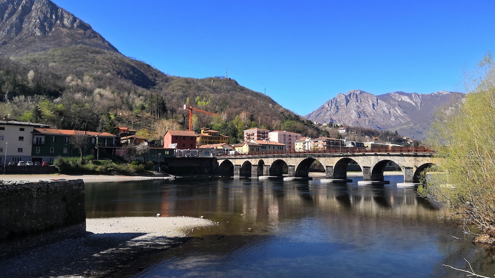

I primi castelli sono quelli dei Celti sulle alture delle montagne, formati da un recinto costituito da grosse pietre (legate da tronchi di legno).
Indagini archeologiche svolte dai musei civici hanno messo in luce:
il Castello bizantino sul Colle di Santo Stefano, caposaldo di una linea fortificata sul Lario dove si ritirarono i Bizantini attaccati dai Longobardi e ai quali resistettero per 20 anni.
Il perimetro della fortificazione di età romano-bizantino era di forma pentagonale, costruito in pietre calcaree locali legate con malta.
Un secondo muro interno delimitava la parte alta del colle dove, al centro, ci sono i ruderi di una torre rettangolare.
Sul Colle, la presenza di una chiesetta nella quale venne trovata una lapide del 535 che nominava un “Presbiter” lì sepolto.
Le Torri erano di solito di forma quadrata e senza porta di ingresso: si entrava da un’apertura posta in alto mediante una scala a pioli.
Esempio:
Torre isolata di segnalazione del periodo romano sulla collina di Santo Stefano, a nord della chiesetta dei Cappuccini di viale Turati, oggi mezza diroccata.
Il Castello viene usato nei testi medievali ed è equivalente al termine Castrum:
Il Castello o fortificazione del rione di Castello a Lecco.
Nel 1938 una foto aerea evidenzia una struttura circolare intorno alla chiesa di Castello.
Con il periodo delle invasioni degli Ungari, all’inizio del X secolo nasce il castello o castrum, situato nell’attuale rione di Castello:
Dall’XI secolo, in tutti i documenti, è chiamato: “CASTRUM LEUCI” ovvero “IL CASTELLO DI LECCO”.
Questo era un recinto che stava intorno al paese di Castello e serviva a proteggere i magazzini di raccolta dei prodotti della corte della città e dove gli abitanti deponevano i loro beni, la cosiddetta “Caneva” (uno dei diritti del dominus feudale).
Nel 1296 in seguito ad una congiura dei guelfi lecchesi a favore dei ghibellini esiliati Della Torre, il signore di Milano, Matteo Visconti, decise che Lecco doveva essere distrutta e non più ricostruita.
In età comunale, nel 1336, Lecco venne ricostruita dal nuovo signore di Milano, Azzone Visconti.
L’edificazione delle mura del Burgus Leuci avvenne insieme alla costruzione del Castello in riva al lago. Le fortificazioni prendono la forma di un triangolo con la base sul lago ed il vertice in corrispondenza di Largo Montenero; secondo le fonti storiche, il loro tracciato si estendeva dal lago, in corrispondenza dell’attuale molo, fino all’oratorio adiacente alla basilica di S. Nicolò, dove piegavano a formare la punta del triangolo, verso l’attuale via Bovara, fino alla Porta Nuova; la seconda sezione delle mura attraversava le odierne via Volta e via Cavour, fino a via Mascari per poi terminare verso il lago.
La fortificazione disponeva di tre porte:
Nel 1479 le merlature furono ricostruite e la torre del castello fu restaurata. Ogni porta era dotata di un rivellino; alla Porta Nuova fu aggiunta la cosiddetta Batteria, un baluardo difensivo a mezzaluna.
Alla Torre era annesso il Castello che fu abbattuto da Giuseppe D'Asburgo-Lorena fra il 1782 ed il 1784.
Nella Pianta della città di Lecco dell’anno 1875 si evidenzia lo sviluppo dell’antico borgo, con espansione oltre le mura verso via Mascari e via Roma.
Nel 1882 parte delle mura che affiancavano la chiesa di S. Nicolò vengono usate come fondazione per il nuovo campanile della collegiata.
Nel 1921 con l'apertura di via S. Nicolò (laterale alla collegiata) viene demolita una parte consistente delle mura assieme alla modifica di una parte del centro storico.
Tra il 1940 e il 1966 verranno apportate ulteriori modifiche alla fascia costiera del lungolago.
Negli anni ottanta le mura vengono di nuovo valorizzate come testimonianza storica.
Nell’Alto Medioevo altre città vengono fortificate per scopi difensivi. Nelle città di pianura si costruiscono le “Motte”: grossi rialzi di terra alti fino a 15 metri, fatti con terreno di riporto estratto dal fossato sottostante. In cima alla collina artificiale veniva eretta una Torre Quadrangolare per il controllo del territorio. Accanto alle abitazioni:
Le origini di quest'isola sono incerte; si ipotizza che si sia generata dall’accumulo di detriti di materiale di riporto che si sono depositate sulle sponde del fiume e che, in seguito, si sono separate dalla terraferma. La causa, probabilmente, è da attribuire all’aggiunta di tre arcate al ponte Azzone Visconti al fine di limitare le periodiche esondazioni del lago. L’isola, distante per circa 11 m dalla terraferma e non collegata con essa da un ponte, è lunga circa 110 m con una larghezza massima di 27 m. L’isola è costituita da un edificio, sovrastato da una torre circolare, e da una zona verde alberata. Durante la sua storia, l’isola, venne adibita come fortino di difesa e come presidio militare. Successivamente, nel gennaio 2013, il direttore generale per i beni culturali e paesaggistici della Lombardia la dichiarò di interesse storico-culturale e dopo un mese, dal FAI “luogo del cuore”.
Azzone Visconti conquista il territorio di Lecco nel 1336, fece costruire il ponte che oggi viene chiamato “Ponte Vecchio”, i lavori terminarono nel 1338. Il Ponte venne progettato per poter collegare il territorio di Lecco a Milano e come Fortezza Galleggiante con lo scopo di guardia del fiume Adda grazie a delle Torri Fortificate. Il Ponte presentava un passaggio levatoio con dieci arcate, mentre al centro era collocata la Cappelletta Votiva.
{kind=link}
{kind=link}
{kind=link}
{kind=link}
{kind=link}
{kind=link}
{kind=link}
{kind=link}
{kind=link}
{kind=link}
{kind=link}
{kind=link}
{kind=link}
{kind=link}
{kind=link}